総復習・応用問題チャレンジ
1. 有理化 1／2
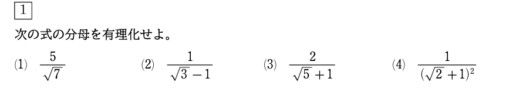
1. 有理化 2／2
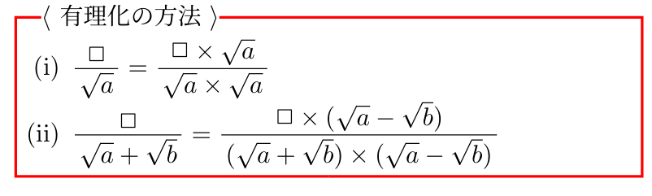
総復習・応用問題チャレンジ
2. 対称式 1／2
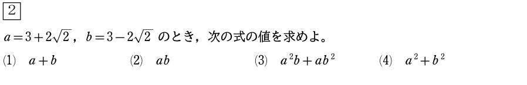
2. 対称式 2／2
原則 $基本対称式a+b, abで表す！$
(3) 因数分解
(4) $a^{2} + b^{2} = {(a+b)}^{2}-2ab$
総復習・応用問題チャレンジ
3. 対称式と有理化 1／2
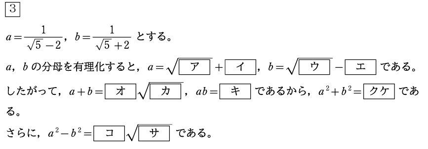
3. 対称式と有理化 2／2
原則 $基本対称式a+b, abで表す！$
(クケ) $a^{2} + b^{2} = {(a+b)}^{2}-2ab$
(コサ) $a^{2} - b^{2} = (a+b)(a-b)$
総復習・応用問題チャレンジ
4. 絶対値 1／2
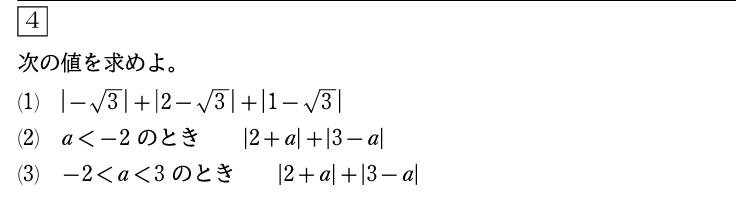
4. 絶対値 2／2
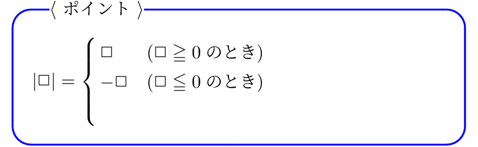
総復習・応用問題チャレンジ
5. 絶対値と方程式・不等式（基本） 1／2
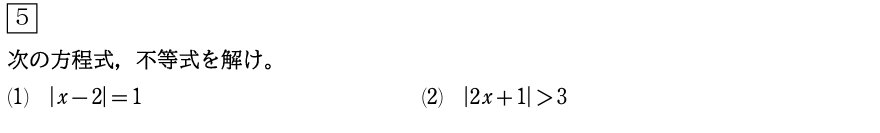
5. 絶対値と方程式・不等式（基本） 2／2
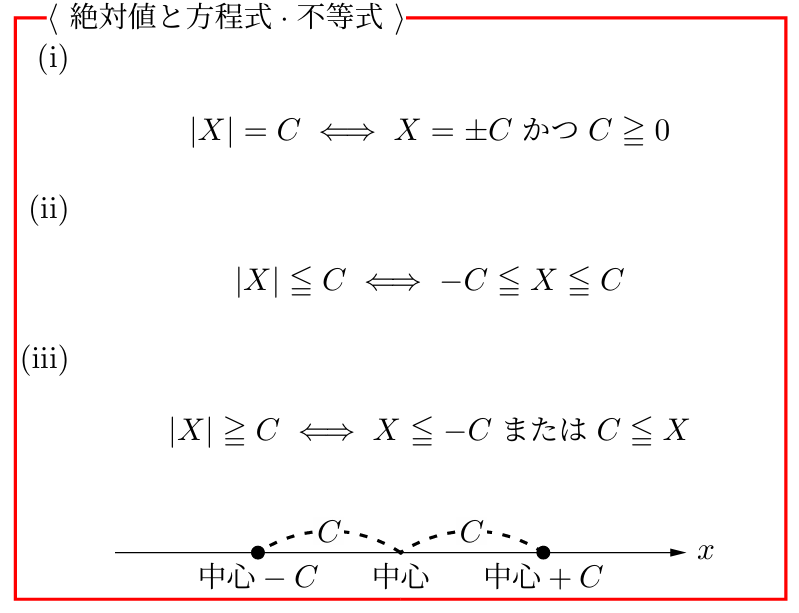
総復習・応用問題チャレンジ
6. 不等式と整数解 1／2
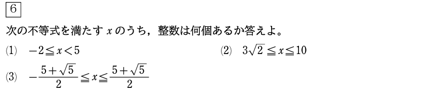
6. 不等式と整数解 2／2
数直線や小数表示をうまく利用！
総復習・応用問題チャレンジ
7. 絶対値と方程式・不等式（応用） 1／2
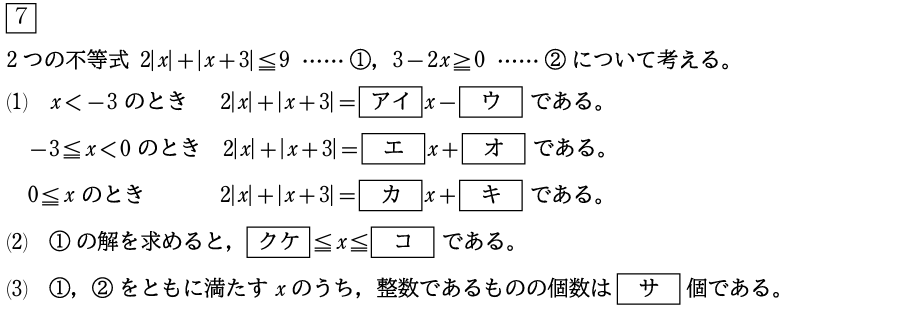
7. 絶対値と方程式・不等式（応用） 2／2
絶対値の中の式が0になる値に着目！
総復習・応用問題チャレンジ
8. 2次関数・平方完成 1／2
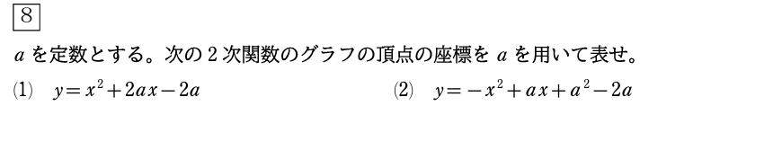
8. 2次関数・平方完成 2／2
文字付でも平方完成をできるようになろう！
総復習・応用問題チャレンジ
9. 2次関数の平行移動 1／2
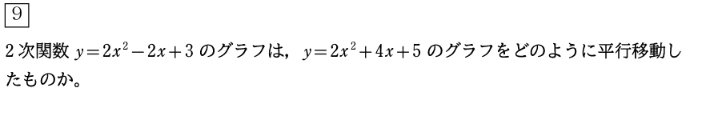
9. 2次関数の平行移動 2／2
頂点の移動に着目！
総復習・応用問題チャレンジ
10. グラフ上の点 1／2
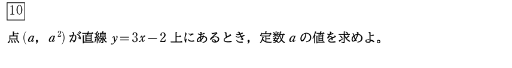

10. グラフ上の点 2／2
$(a, b)$ が $y=f(x)$ 上にあるとき
$$ b = f(a) $$
総復習・応用問題チャレンジ
11. 複合問題 1／2
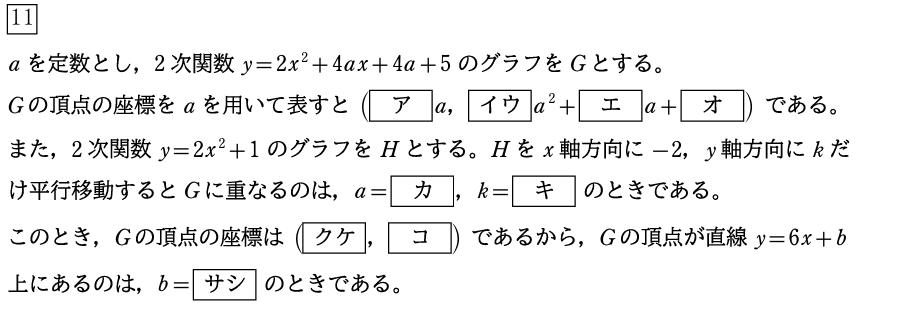
11. 複合問題 2／2
$\fbox{8}$ から $\fbox{10}$ の解き方をうまく利用！
総復習・応用問題チャレンジ
12. $f(x)$ の値 1／2
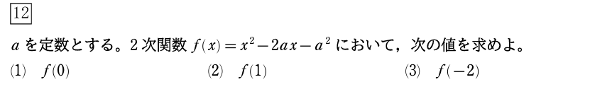
12. $f(x)$ の値 2／2
$f(\fbox{})$ は $f(x)$ に $x=\fbox{}$ を代入！
総復習・応用問題チャレンジ
13. 2次関数の最大値・最小値 1／2
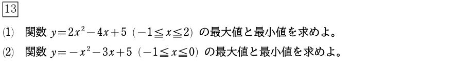
13. 2次関数の最大値・最小値 2／2
頂点と定義域の端の点の位置関係に注意！
総復習・応用問題チャレンジ
14. 2次方程式 1／2
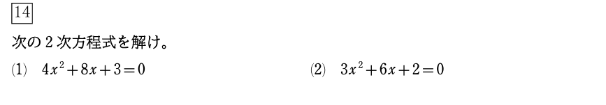
14. 2次方程式 2／2
因数分解か解の公式を利用！
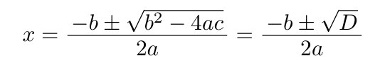
総復習・応用問題チャレンジ
15. 最大値・最小値と場合分け 1／2
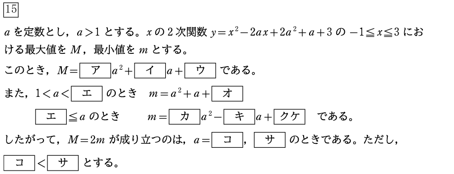
15. 最大値・最小値と場合分け 1／2
最小値：軸に最も近いところ！ （軸と定義域の位置関係に注意）
最大値：軸に最も遠いところ！
場合分けに慣れる！